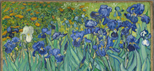

With painting, the artist works on a two-dimensional surface. This surface is mostly a stretched linen, cotton canvas, or wooden panel. Some artists also paint on other surfaces, such as metal or plastic. Think of copper or linoleum, to name a few.
The substance or medium the artist uses is, of course, paint, mostly acrylic, tempera, or oil paint. In order to paint, there is also a medium to manipulate the paint. With tempera, the artist uses egg and water. This technique was prevalent in Italy before oil painting, and its possibilities were introduced by Northern artists. With acrylic paint, the artist only needs water. With oil paint, the artist uses a painting medium of oil, such as linseed oil, walnut oil, or turpentine. Oil painting was invented – or rather perfectionized – by the aforementioned Jan Van Eyck in the 14th century, resulting in a breakthrough in painting, enabling artists to achieve a very high sense of naturalism due to this technique.
Almond blossoms

A serene painting of almond blossoms by Vincent van Gogh, featuring delicate white and pink petals on twisting branches against a soft blue sky, evoking tranquility.
Café Terrace at Night

Café Terrace at Night by Vincent van Gogh portrays a warmly lit café in Arles, contrasting with the deep blue, starry night sky.
Irises
Irises by Vincent van Gogh showcases a vibrant bouquet of blue irises with rich green leaves, painted with expressive brushstrokes and dynamic movement.
Mona Lisa

Mona Lisa by Leonardo da Vinci features a mysterious woman with an enigmatic smile, soft sfumato shading, and a serene landscape background.
Water Lilies

Water Lilies by Claude Monet is a series of impressionist paintings depicting tranquil ponds with floating lilies, capturing light, color, and reflections beautifully.
The Last Supper

The Last Supper by Da Vinci portrays Jesus and his twelve disciples at the moment he announces his betrayal, featuring masterful composition.
Der kuss (The Kiss)

The Kiss is a famous Art Nouveau painting depicting a couple embracing, wrapped in a golden, patterned robe, symbolizing love and intimacy.
Woman with a Parasol

Woman with a Parasol by Claude Monet depicts a elegantly dressed woman, possibly his wife Camille, holding a parasol in a breezy, sunlit field.